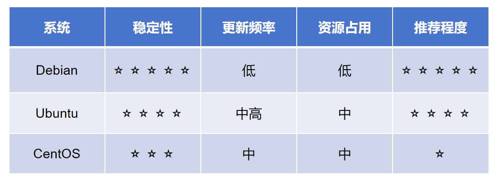

🕓2026年03月26日
视频教程：▶https://youtu.be/v3sHXuuv4rA?si=TEpunbVvbAYfGsXc
选择 VPS 系统时，Debian、Ubuntu 和 CentOS 到底哪个好？本文详细对比三者在稳定性、资源占用、更新机制等方面的差异，帮助新手避免常见坑，快速选出最适合自己的服务器系统。
一、VPS 系统怎么选？新手最容易踩的坑
很多人第一次购买 VPS 时，都会遇到一个问题：
👉 Debian、Ubuntu、CentOS 到底选哪个？
看起来只是一个简单选择，但实际上：
👉 系统选错，会直接影响后续使用体验和稳定性。
尤其是在这些场景下：
选错系统，很容易出现：
二、Debian、Ubuntu、CentOS 核心区别
1. Debian：稳定优先（服务器首选）
Debian 的最大特点是：
👉 稳定
它的机制是：
优点：
适合：
2. Ubuntu：功能全面（适合开发）
Ubuntu 基于 Debian，但更加“激进”：
特点：
优点：
缺点：
👉 更新频繁，可能导致环境变化
3. CentOS：逐渐退出主流
CentOS 曾经是服务器主流系统，但现在：
👉 已转为 CentOS Stream（滚动更新）
这意味着：
替代方案：
但对于新手来说：
👉 不建议使用
三、Debian vs Ubuntu vs CentOS 对比表

推荐：
👉 Debian 12
原因：
👉 开发 / Docker / 新技术环境
推荐：
👉 Ubuntu
原因：
👉 是否还要用 CentOS？
👉 不建议新手使用
五、新手最容易犯的错误
很多人会：
👉 直接选“最新版 Ubuntu”
然后遇到：
正确做法：
👉 教程用什么系统，你就用什么系统
目前大多数教程：
👉 基于 Debian
六、总结：VPS 系统选择建议
最终建议：
👉 不会选，就选 Debian 12
这是目前最稳、最省心的方案。
下一篇预告
如果你已经准备搭建节点，可以继续阅读文章>>搭建 3X-UI 面板打不开？解决 ufw 报错 & SSL 证书报错 (Debian12)